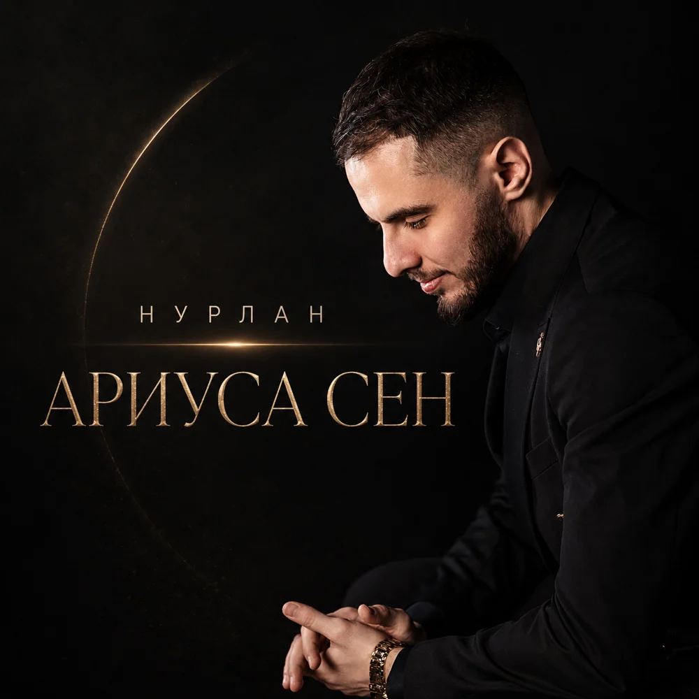
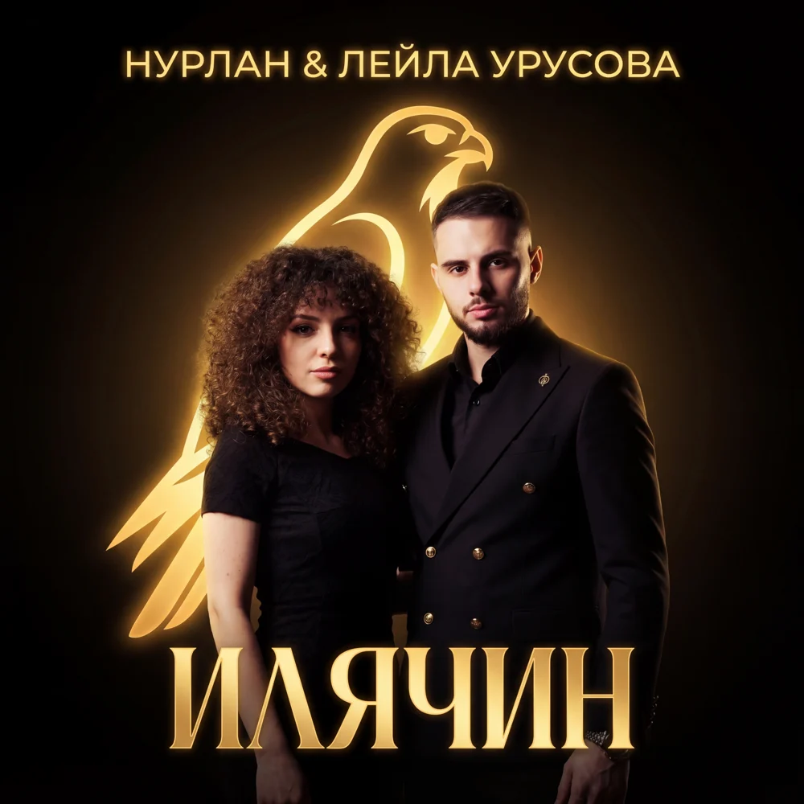
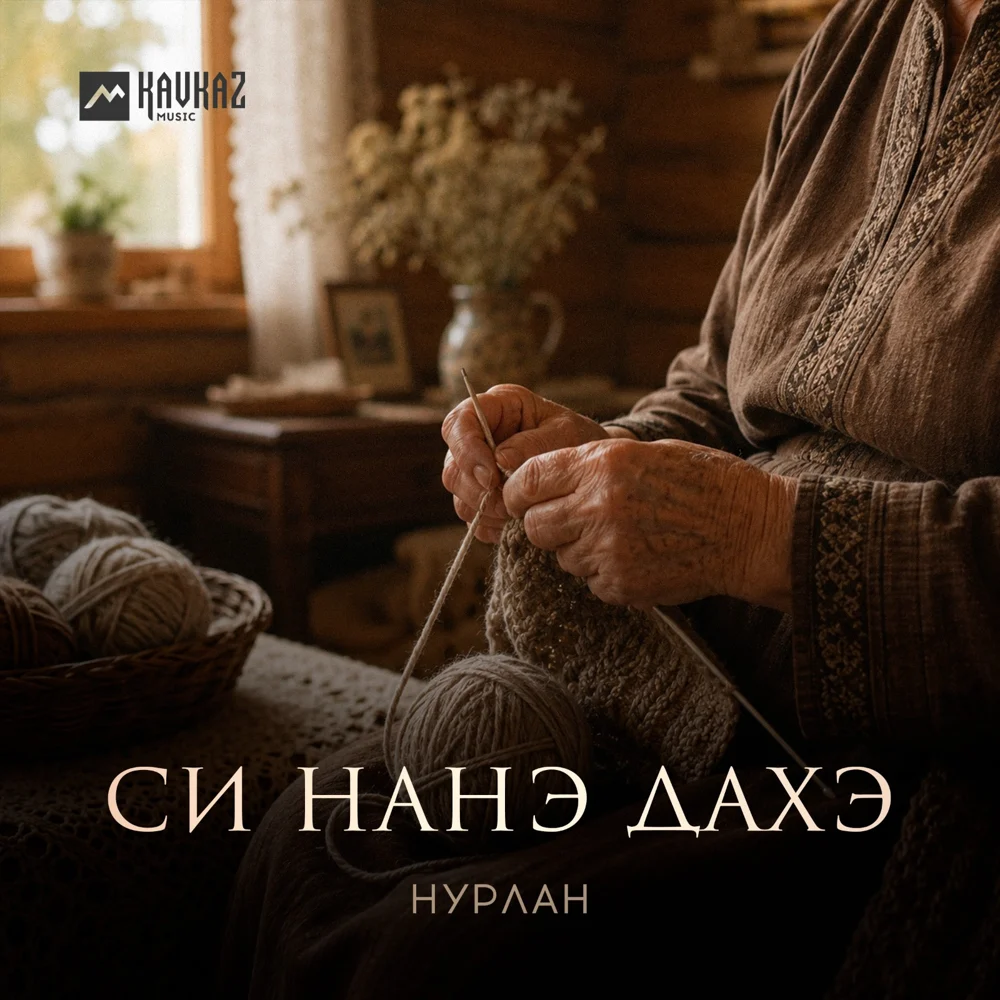
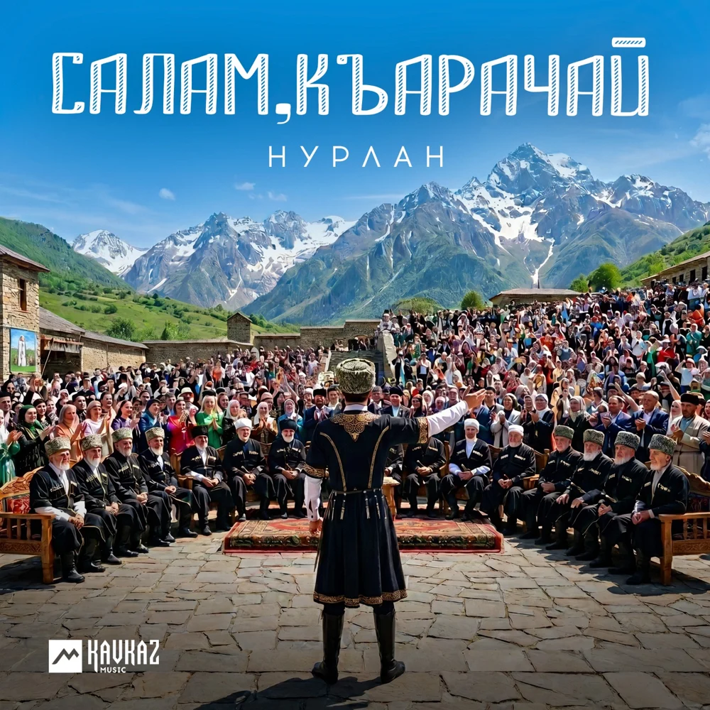
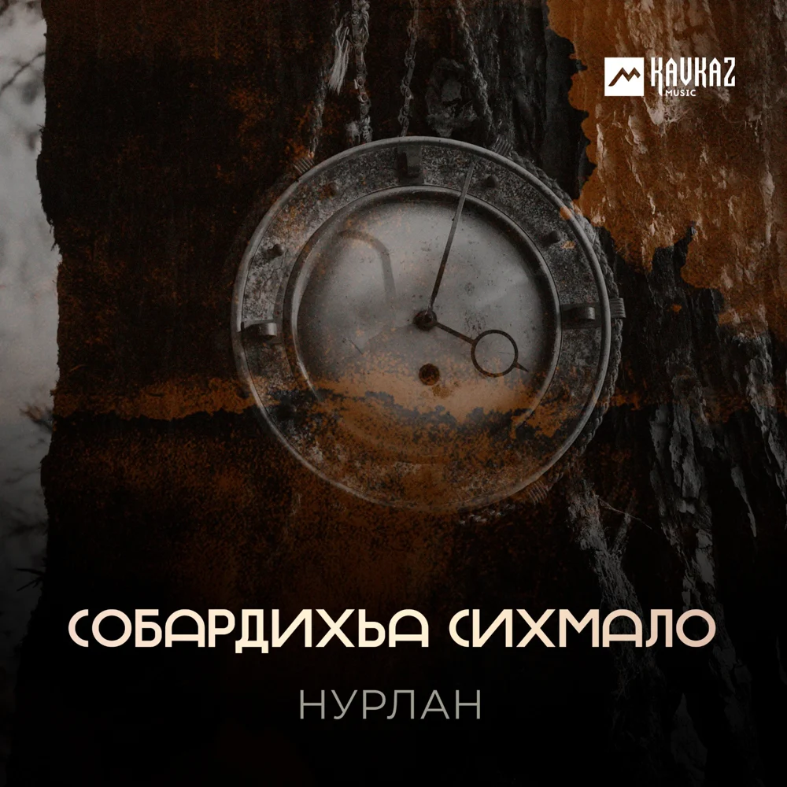
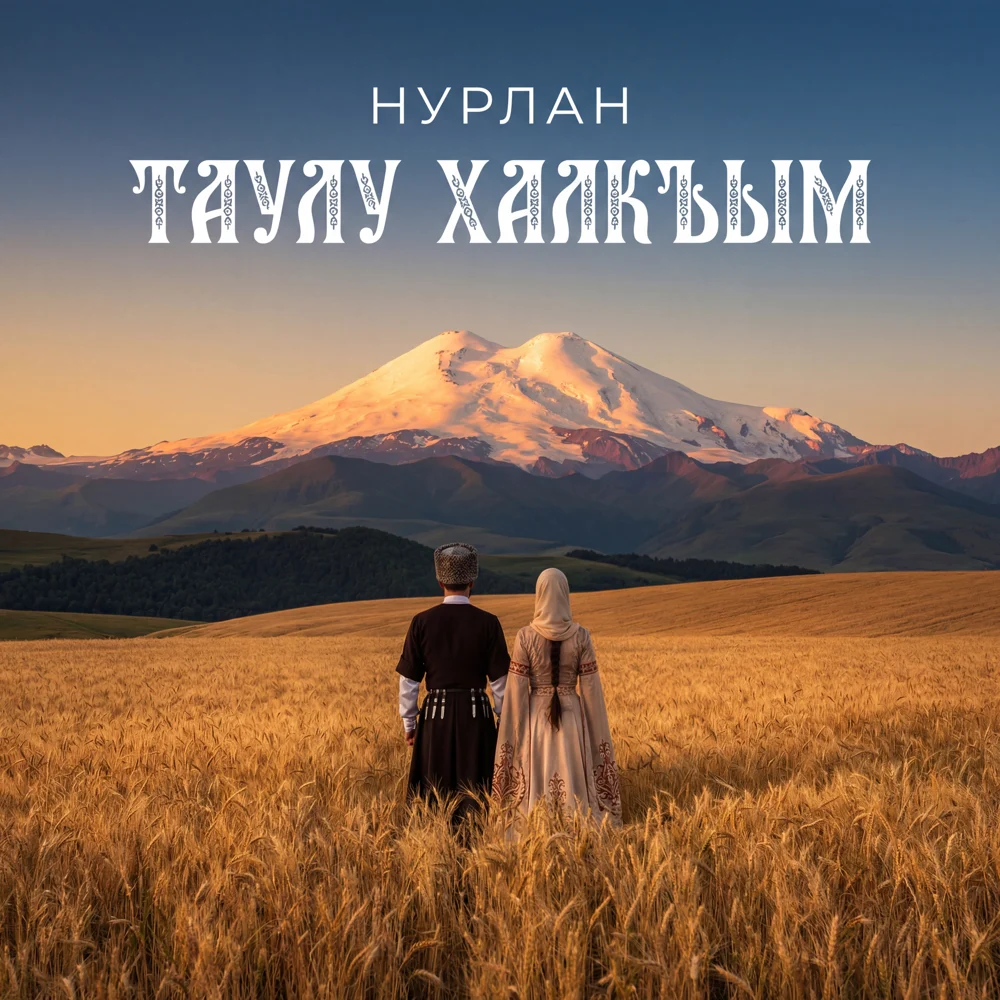
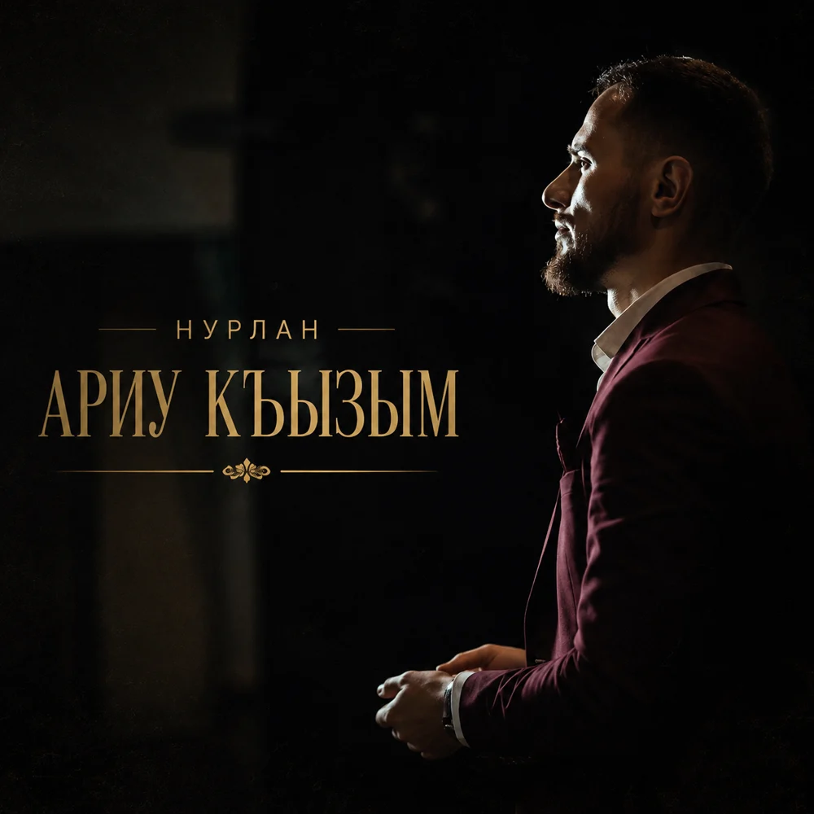
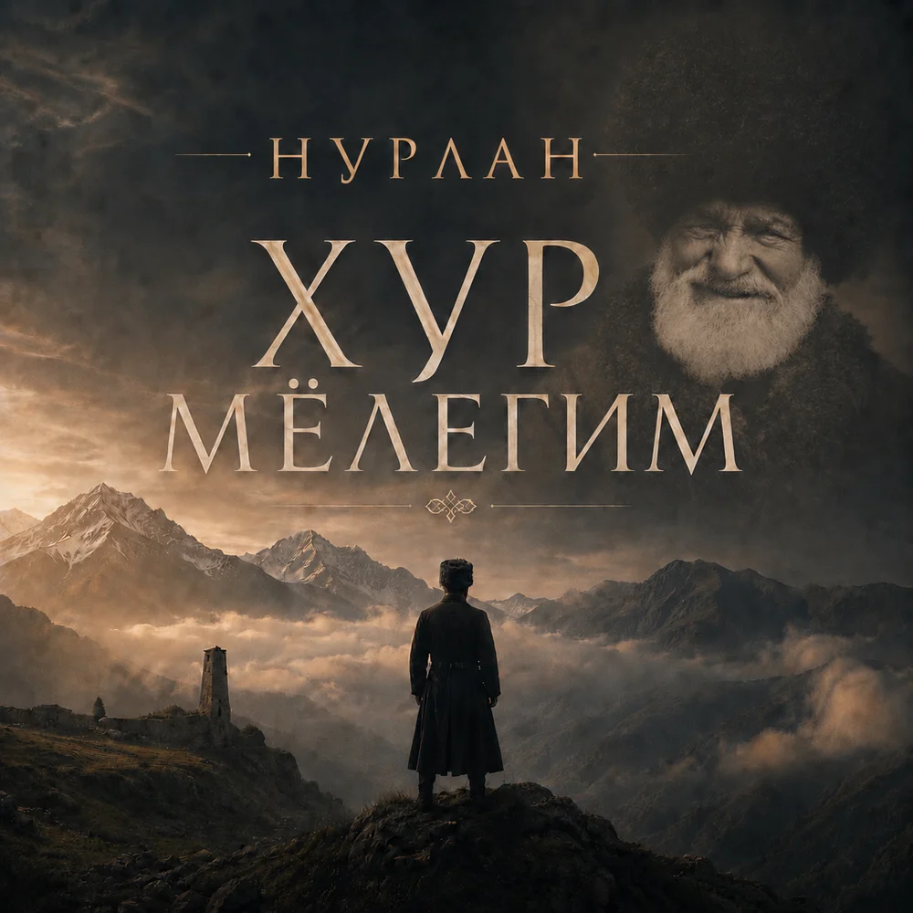
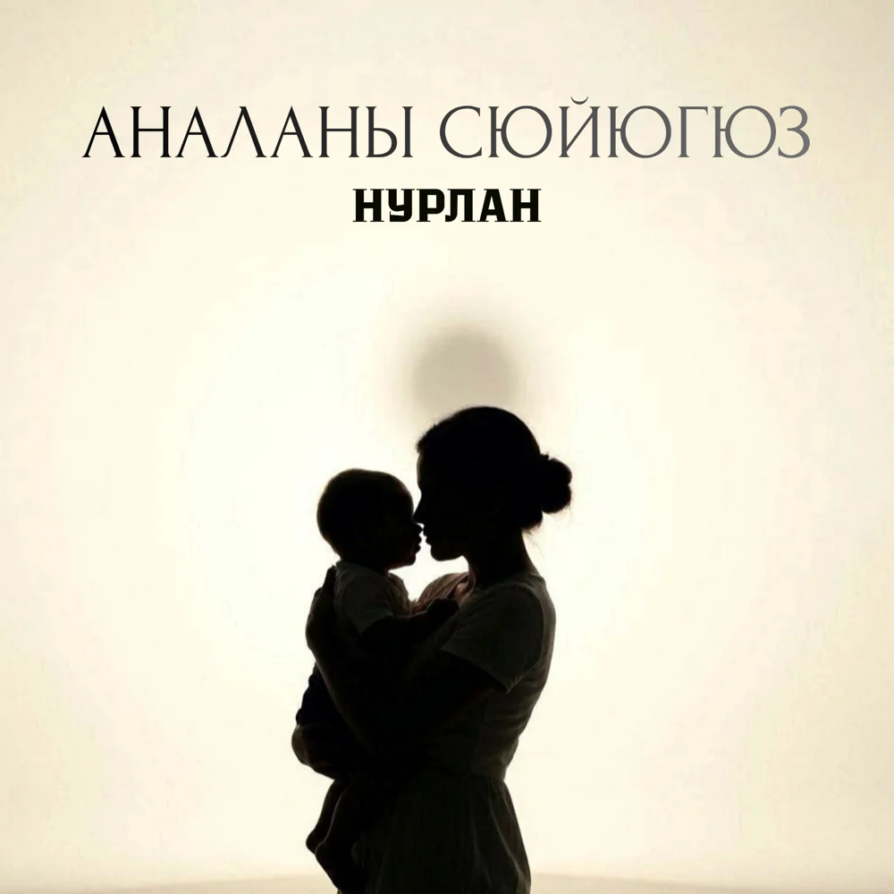
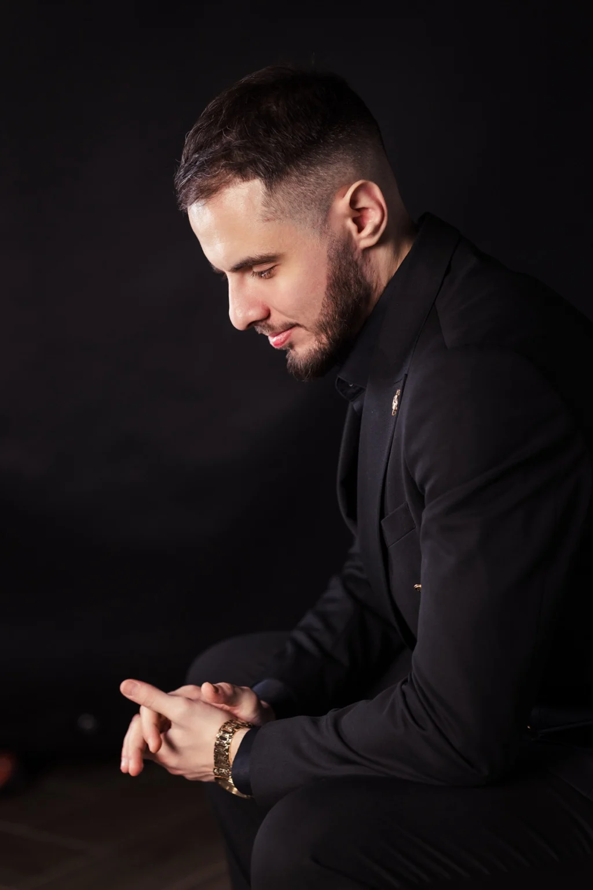

01
Новый релиз
Тауларым
НУРЛАН · Яндекс Музыка
Музыка вне одного жанра.Один артист — разные состояния
СлушатьСлушайте на цифровых площадках
НУРЛАН · Яндекс Музыка

НУРЛАН · Яндекс Музыка

НУРЛАН · Яндекс Музыка

НУРЛАН · Яндекс Музыка

НУРЛАН · Яндекс Музыка

НУРЛАН · Яндекс Музыка

НУРЛАН · Яндекс Музыка
НУРЛАН · Яндекс Музыка

НУРЛАН · Яндекс Музыка

НУРЛАН · Яндекс Музыка

НУРЛАН · Яндекс Музыка

НУРЛАН (Нурлан Джамалдинов) — артист из Нальчика. Кумык по происхождению, он вырос среди разных народов, языков и традиций. Эта среда сформировала его отношение к музыке: беречь свои корни и находить то, что объединяет людей.
Его путь на сцену начался с национальных танцев: с 2011 года он занимался в ансамбле «Минги-тау». К вокалу пришёл в 2016-м — на студийной записи, куда его пригласили как гитариста. Случайная проба голоса стала началом нового творческого пути.
Поворотной работой стала «Ариуса сен». Небольшое видео с этой песней привлекло новую аудиторию, принесло узнаваемость и открыло дорогу к новым выступлениям. Карачаево-балкарский язык, близкий ему с детства, занимает особое место в его творчестве.
НУРЛАН поёт на русском, кумыкском, карачаево-балкарском, кабардинском, ногайском и английском языках. Не ограничивает себя одним жанром и сам выбирает репертуар. Главное для него — чувствовать слова и исполнять музыку, которая откликается в душе.
Ближайший концерт · 2026
Архив выступлений · 2026
Дом культуры
Начало · 19:00Дворец культуры им. К. Кулиева
Начало · 19:00Амфитеатр «Зелёный остров»
Начало · 19:00Дом молодёжи
Начало · 19:00Установи сайт НУРЛАН на главный экран телефона и открывай его как отдельное приложение.
На iPhone: Поделиться → На экран «Домой». На Android кнопка установки появится автоматически, если браузер поддерживает PWA.